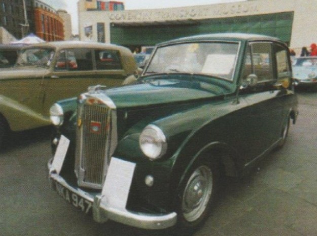

Coventry Car and Motorcycle Day and Heritage Weekend
9th September 2017
Report by Paul Burgess
COVENTRY CAR DAY is an annual event organised by the Coventry Transport Museum for cars made in Coventry. This year it was extended to include other cars as well. There is an optional 30-mile run in from Coombe Abbey which sets off at 9:15 AM.
My usual navigator, not relishing a 7.30 start, John Castle, offered to sit in the co-driver’s seat. The weather forecast was not good, being for heavy, possibly thundery, showers from lunchtime.
Saturday morning, 7:15, I was just about to get the car out to go and pick John up when my mobile rang. It was John having to cry off as he’d picked up an injury playing bowls the night before. I didn’t know that bowls was a contact sport, John!
Fortunately, I had asked for a copy of the route for the run the week before just in case I hadn’t got a navigator and had programmed it into my satnav, a recently acquired skill.
So, after an unplanned cup of coffee to fill-in a now spare 15 minutes, I headed-off down the Fosse Way to Coombe Abbey for the start. A pleasant, incident free journey in brilliant sunshine marred only by the really vicious sleeping policemen that Coombe Abbey employ on their long drive.
There looked to be about 60 cars participating in the run including a couple of 1920s Singers. Complementary tea and coffee and nice chats with some of the other owners were followed by a briefing about the run and the day and then we were off.
I started about a third of the way down the convoy behind a 1928 Singer Junior and in-front of a Triumph TR7 (also without navigators I later discovered).
We did well for the first eight or nine miles until the Singer missed a turn, having lost sight of the cars in front. So, I was now section leader for the cars behind me.
All went well for the next few miles (even your first gear hill at Stoneleigh, John sailed up it in second) until the route instructions told us to turn right at a ‘no right turn’!
The satnav handled it fine by taking me up to the roundabout with the A46 a hundred yards (sorry, metres) or so up the road and bringing me back to turn left into the correct road.
All the cars behind me, however, decided to turn right onto the A46. So, I completed the route on my own and arrived at the museum at about 10:30 ready for the complementary toasted teacake and coffee and the first rain shower at 11:30.
There were about 80 cars split between the Transport Museum and Broadgate and a good number of spectators despite the weather which was, as forecast, light and heavy showers with sunny intervals.
I discovered in the rain that I hadn’t in-fact sealed the leaks in both corners of the windscreen but had at least reduced the flow. That’s another item on the to-do list!
After a brief sunny spell looked like coming to an end I left at 3:30 to try and negotiate Coventry’s nightmare ring road in the dry. All in all, a very pleasant day out.